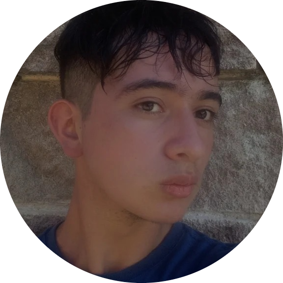

My Life
Personal Introduction
Name: Fredyn Alberto López Hernández
Place of Origin: Chimaltenango, Guatemala
Age: Born in 2005
Hello everyone, my name is Fredyn Lopez, I am 18 years old, I live in Chimaltenango and below I will tell you about my life and experiences.
Personal Anecdote and Lessons Learned
One of the most decisive moments of my last years occurred in 2021, when my sister fell ill with covid, although today due to vaccines and the information we have about this disease in those times of 2021 covid was at its peak and it was a very dangerous disease because of how new it was. Well, living this with a family member made me aware that from one moment to the next life can take a thousand turns at the moment when one least expects it, also in appreciating my loved ones more and valuing every moment with them
Something that made me grow a lot as a person was enrolling in karate and participating in competitions. This gave me great confidence as a person, experiencing the sensation of having an opponent in front of you and knowing that he prepared for the same thing as you. It gives you a feeling of loneliness since you know that whatever happens now depends purely on you. Having and continuing to experience this made me more responsible and disciplined.
These short and long-term experiences made me see life and conflicts in a different way. In the case of life, I wanted to live it without so many buts and do what I felt was right, and in the case of conflicts, I wanted to approach them calmly and safely.
Words of Gratitude
As I reflect on my journey so far, I find myself filled with gratitude for the many people who have played a role in shaping the person I am today. First and foremost, I want to thank my family,who have been my unwavering support system. Their love, guidance, and encouragement have been the foundation of all my achievements, and I am deeply thankful for the values they have instilled in me.
I also want to express my heartfelt thanks to my friends. The friendships I have cultivated over the years have been a source of immense joy and strength. Whether through shared laughter, mutual support during tough times, or simply being there for one another, these bonds have enriched my life in countless ways. Many of these friendships have stood the test of time, and I am grateful to have such loyal and understanding people in my life.
Thank you very much for listening carefully to my personal experiences. I hope I have done well. With this I conclude the presentation of my life and my experiences.